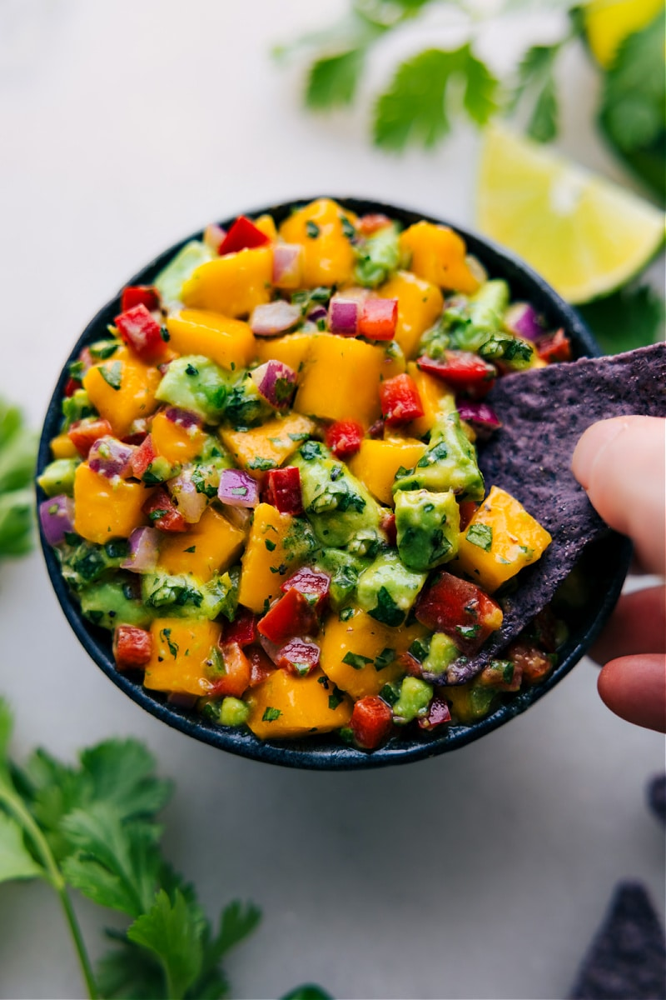

<h1>Mango Salsa</h1> 


Serving Size: 1/4 cup, makes 8 servings
5 mg sodium per serving

Ingredients:
2 medium mangos
1 medium jalapeno pepper (2 teaspoons)
1/2 cup chopped cilantro
1/4 cup lemon juice

Preparation:
remove stems, pit and seeds
Chop cilantro, mango, and pepper- 
Slice and Juice Lemon
Mix all together

Serving idea: great with grilled salmon or with low sodium tortilla chips